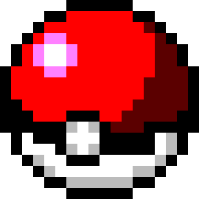

<div class="about">
    <div class="container ng-hide"
         ng-show="about.visible">
        <div class="pokeball">
            
        </div>
        <div class="parent">
            <div class="row">
                <div class="col-md-8 col-md-offset-2 content">
                    
                    <section class="logo wrapper">
                        
                    </section>
                    
                    <section>
                        <h4 class="paragraph">Poke Pathfinder is a short demo inspired by the widely popular franchise, Pokémon.
                            This demonstration allows users to use pathfinding algorithms to explore an infamous
                            location in Pokémon world, Cerulean Cave.</h4>
                        
                        <h4 class="paragraph">This project is an excellent tool for teaching others about the mechanics of pathfinding algorithms.
                            There are many features that allow users to tweak which algorithm is used and how it is implement.</h4>
                    </section>
                    
                    <section>
                        <h3 class="section-heading">How To Play</h3>
                        <h4 class="paragraph">Using Poke-Pathfinder is easy and fun! Just follow the instruction below to get started.</h4>
                        <ol class="list">
                            <li>Select the algorithm</li>
                            <p>There are four algorithms to choose from: Breadth-first search, Depth-first Search, Dijksta's and A*</p>
                            <p>If you're using Dijkstra's or A*, you have the option of changing the weights of different tiles in the cave. Experiment to see how the algorithms change depending on the weights applied.</p>
                            
                            <li>Choose a Start Location</li>
                            <p>You can start your player from anywhere in the cave. Move him around in Cave view (tablet and desktop only) by dragging and dropping him. Or move around the green orb to determine where the pathfidner will start from.</p>
                            
                            
                            <li>Choose an End Location</li>
                            <p>Where should you player go? Choose from one of the available options, or move around the checkered marker to determine his destination. You can drag and drop it, too.</p>
                            
                            <li>Choose a Task</li>
                            <p>You can select to follow construct and follow the path, or generate a flood fill.</p>
                            <p>If you 'Follow Path,' the player will find his way to his final destination all by himself.</p>
                            <p>If you want to get a sense of how the algorithm works, you can watch the pathfinder generate a 'frontier.' The yellow arrows are nodes that are currently in the open list. The gradient tiles are in the closed list. They color of the gradient indicates either the distance from the source, or the total weight from the source (depending on the algorithm you're using). The arrows each point to their parent.</p>
                            
                            <li>Choose Your Settings</li>
                            <p>Tweak the game to your liking. PLay with the layers to gain different perspectives. Increase the speed, if you're feeling impatient. And choose the gender that you most identify with.</p>
                        </ol>
                    </section>
                    
                    <section>
                        <h3 class="section-heading">Implementation Details</h3>
                        
                        
                        <h4 class="paragraph">This small game is built entirely in 
                            JavaScript. The game itself is built in vainally Javascript, 
                            with a bit of jQuery. And the website is built on AngularJS and Bootstrap</h4>
                        
                        <h4 class="paragraph">The game consists of many of the regular 
                            mechanics that are employed by virtually all full games. The game 
                            runs through a loop, and achieves smooth movemen through interpolation. 
                            Information about the nodes and their neighbors is stored in a 
                            graph, which determeines which tiles are accessible as well as 
                            enabling all of the algorithms to work. The character sprites 
                            (both male and female player, Mewtwo, the surf pokemon, even the 
                            dust when he finishes surfing) are maintained with a spritesheet.</h4>
                        
                        <h4 class="paragraph">The map of the game is maintained with a 
                            combination of regular html images and canvas objects. The static 
                            parts of the map are regular html images. They are layered and 
                            controlled with Javascript in both Cave view and Gameboy views. 
                            The movement of the water and the foreground/background effect 
                            (observed when the player is surfing) was achieved using html 
                            and JavaScript to change offsets and z-indeces as necessary.</h4>
                        
                        <h4 class="paragraph">The game also employs a canvas to achieve the 
                            effects, and also to draw the sprite. The path, the frontier 
                            and location markers and the dragging effects are rendered on 
                            canvas objects.</h4>
                    </section>
                    
                    <section>
                        <h3 class="section-heading">Graditute</h3>
                        
                        <h4 class="paragraph">This project was enabled by the many amazing 
                            resources available online. Luckily, the Internet has many highly collaborative
                            Pokémon trainers and 2D-game enthusiasts. Thanks to 
                            <a href="{{ links.mulani }}">Medhi Mulani</a> for providing a
                            useful overview of how Pokemon's map is created and maintained. It was a great starting point.
                            Thanks to the good people at <a href="{{ links.sprites_resource }}">The Sprites Resource</a>
                            And thanks to <a href="{{ links.gameboy }}">Josh Collinsworth</a>, the highly-skilled creator 
                            the immaculate CSS (!) Game Boy shell.</h4>
                        
                    </section>
                </div>
            </div>
        </div>   
    </div>
</div>
